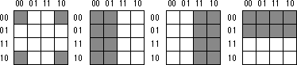

|
Table of Content | Chapter Two
(Part 3) |
|
Table of Content | Chapter Two
(Part 3) |
| CHAPTER TWO: BOOLEAN ALGEBRA (Part 2) |
| 2.5 - Simplification of Boolean Functions |
| 2.5 Simplification of Boolean Functions |
Since there are an infinite variety of boolean functions of n variables, but only a finite number of unique boolean functions of those n variables, you might wonder if there is some method that will simplify a given boolean function to produce the optimal form. Of course, you can always use algebraic transformations to produce the optimal form, but using heuristics does not guarantee an optimal transformation. There are, however, two methods that will reduce a given boolean function to its optimal form: the map method and the prime implicants method. In this text we will only cover the mapping method, see any text on logic design for other methods.
Since for any logic function some optimal form must exist, you may wonder why we don't use the optimal form for the canonical form. There are two reasons. First, there may be several optimal forms. They are not guaranteed to be unique. Second, it is easy to convert between the canonical and truth table forms.
Using the map method to optimize boolean functions is practical only for functions of two, three, or four variables. With care, you can use it for functions of five or six variables, but the map method is cumbersome to use at that point. For more than six variables, attempting map simplifications by hand would not be wise.
The first step in using the map method is to build a two-dimensional truth table for the function:
Warning: Take a careful look at these truth tables. They do not use the same forms appearing earlier in this chapter. In particular, the progression of the values is 00, 01, 11, 10, not 00, 01, 10, 11. This is very important! If you organize the truth tables in a binary sequence, the mapping optimization method will not work properly. We will call this a truth map to distinguish it from the standard truth table.
Assuming your
boolean function is in canonical form (sum of minterms), insert ones for each of the truth
map entries corresponding to a minterm in the function. Place zeros everywhere else. For
example, consider the function of three variables F=C'B'A + C'BA' + C'BA + CB'A' +
CB'A + CBA' + CBA. The figure below shows the truth map for this function.
The next step is to draw rectangles around rectangular groups of ones. The rectangles you enclose must have sides whose lengths are powers of two. For functions of three variables, the rectangles can have sides whose lengths are one, two, and four. The set of rectangles you draw must surround all cells containing ones in the truth map. The trick is to draw all possible rectangles unless a rectangle would be completely enclosed within another. Note that the rectangles may overlap if one does not enclose the other. In the truth map below there are three such rectangles:
Each rectangle represents a term in the simplified boolean function. Therefore, the simplified boolean function will contain only three terms. You build each term using the process of elimination. You eliminate any variables whose primed and unprimed form both appear within the rectangle. Consider the long skinny rectangle above that is sitting in the row where C=1. This rectangle contains both A and B in primed and unprimed form. Therefore, we can eliminate A and B from the term. Since the rectangle sits in the C=1 region, this rectangle represents the single literal C.
Now consider the solid square above. This rectangle includes C, C', B, B' and A. Therefore, it represents the single term A. Likewise, the square with the dotted line above contains C, C', A, A' and B. Therefore, it represents the single term B.
The final, optimal, function is the sum (logical OR) of the
terms represented by the three squares. Therefore, F= A + B + C. You do not
have to consider squares containing zeros.
When enclosing groups of ones in the truth map, you must
consider the fact that a truth map forms a torus (i.e., a doughnut shape). The right edge
of the map wraps around to the left edge (and vice-versa). Likewise, the top edge wraps
around to the bottom edge. This introduces additional possibilities when surrounding
groups of ones in a map. Consider the boolean function F=C'B'A' + C'BA' + CB'A' +
CBA'. The figure below shows the truth map for this function.

At first glance, you would think that there are two possible rectangles here as the figure below shows.
However, because the truth map is a continuous object with the right side and left sides connected, we can form a single, square rectangle, as shown below:
So what? Why do we care if we have one rectangle or two in the truth map? The answer is because the larger the rectangles are, the more terms they will eliminate. The fewer rectangles that we have, the fewer terms will appear in the final boolean function. For example, the former example with two rectangles generates a function with two terms. The first rectangle (on the left) eliminates the C variable, leaving A'B' as its term. The second rectangle, on the right, also eliminates the C variable, leaving the term BA'. Therefore, this truth map would produce the equation F=A'B' + A'B. We know this is not optimal, see Th 13. Now consider the second truth map above. Here we have a single rectangle so our boolean function will only have a single term. Obviously this is more optimal than an equation with two terms. Since this rectangle includes both C and C' and also B and B', the only term left is A'. This boolean function, therefore, reduces to F=A'.
There are only two cases that the truth map method cannot handle properly: a truth map that contains all zeros or a truth map that contains all ones. These two cases correspond to the boolean functions F=0 and F=1, respectively. These functions are easy to generate by inspection of the truth map.
An important thing you must keep in mind when optimizing
boolean functions using the mapping method is that you always want to pick the largest
rectangles whose sides' lengths are a power of two. You must do this even for overlapping
rectangles (unless one rectangle encloses another). Consider the boolean function F
= C'B'A' + C'BA' + CB'A' + C'AB + CBA' + CBA. This produces the truth map appearing
below:
The initial temptation is to create one of the sets of rectangles found below:
However, the correct mapping is
All three mappings will produce a boolean function with two
terms. However, the first two will produce the expressions F= B + A'B' and F
= AB + A'. The third form produces F = B + A'. Obviously, this last
form is more optimal than the other two forms (see theorems 11 and 12).
For functions of three variables, the size of the rectangle determines the number of terms it represents:
Truth maps you create for functions of four variables are even trickier. This is because there are lots of places rectangles can hide from you along the edges. The Figures below show some possible places rectangles can hide.

This list of patterns doesn't even begin to cover all of them! For example, these diagrams show none of the 1x2 rectangles. You must exercise care when working with four variable maps to ensure you select the largest possible rectangles, especially when overlap occurs. This is particularly important with you have a rectangle next to an edge of the truth map.
As with functions of three variables, the size of the rectangle in a four variable truth map controls the number of terms it represents:
This last example demonstrates an optimization of a
function containing four variables. The function is F = D'C'B'A' + D'C'B'A + D'C'BA
+ D'C'BA' + D'CB'A + D'CBA + DCB'A + DCBA + DC'B'A' + DC'BA', the truth map appears
below:
Here are two possible sets of maximal rectangles for this function, each producing three terms
Both functions are equivalent; both are as optimal as you can get. Either will suffice for our purposes.
First, let's consider the term represented by the rectangle formed by the four corners. This rectangle contains B, B', D, and D'; so we can eliminate those terms. The remaining terms contained within these rectangles are C' and A', so this rectangle represents the term C'A'.
The second rectangle, common to both maps in the figure, is the rectangle formed by the middle four squares. This rectangle includes the terms A, B, B', C, D, and D'. Eliminating B, B', D, and D' (since both primed and unprimed terms exist), we obtain CA as the term for this rectangle.
The map on the left in the figurehas a third
term represented by the top row. This term includes the variables A, A', B, B', C' and D'.
Since it contains A, A', B, and B', we can eliminate these terms. This leaves the term
C'D'. Therefore, the function represented by the map on the left is F=C'A' + CA +
C'D'.
The map on the right in the figure has a third
term represented by the top/middle four squares. This rectangle subsumes the variables A,
B, B', C, C', and D'. We can eliminate B, B', C, and C' since both primed and unprimed
versions appear, this leaves the term AD. Therefore, the function represented by the
function on the right is F=C'A' + CA + AD'.
Since both expressions are equivalent, contain the same number of terms, and the same number of operators, either form is equivalent. Unless there is another reason for choosing one over the other, you can use either form.
|
Table of Content | Chapter Two (Part 3) |